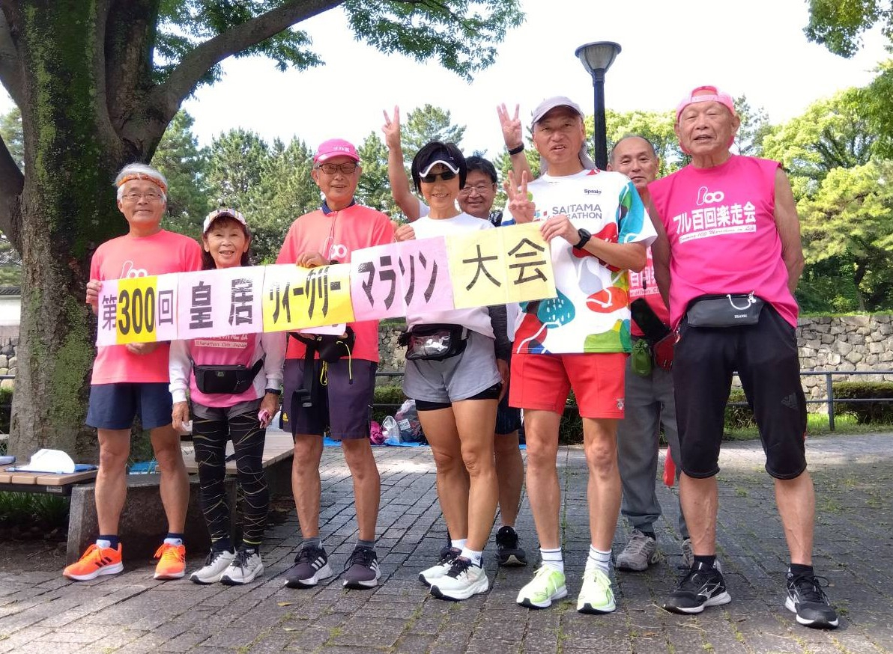

2025-06-12 19:49:04
2025年(令和7年）6月12日（木）晴れ 19～28℃
| 順位 | 番号 | 氏名 | 距離 | タイム |
|---|---|---|---|---|
| 1 | 514 | 山口義治 | フル | 5:32:52 |
| 2 | 515 | 長谷川崇之 | フル | 6:17:00 |
| 3 | 504 | 辰巳順一 | フル | 6:42:54 |
| 4 | 535 | 竹田昭彦 | フル | 9:26:11 |
| 5 | 501 | 宮野 繁 | フル | 10:01:28 |
| 6 | 545 | 井出優子 | 24.1km | 3:38:30 |
| 7 | 531 | 鐘ヶ江逸郎 | 22.2km | 2:43:00 |
| 8 | 509 | 瀬戸君子 | 15km | 3:38:00 |
| 8 | 534 | 石井 功 | 15km | 3:38:00 |
300回記念大会。開会後有志で祝賀会開催。
遠藤さんからご祝儀を頂きました。ありがとうございました。
